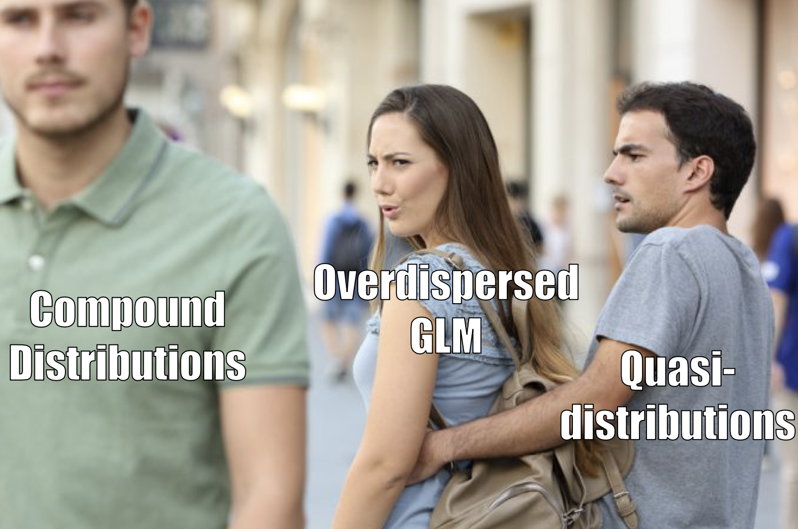
Reed frogs
Reed frogs Survival Analysis
## density pred size surv propsurv
## 1 10 no big 9 0.9
## 2 10 no big 10 1.0
## 3 10 no big 7 0.7
## 4 10 no big 10 1.0
## 5 10 no small 9 0.9
## 6 10 no small 9 0.9But those QQ plots…
## DHARMa::plotResiduals - low number of unique predictor values, consider setting asFactor = T
## DHARMa::plotResiduals - low number of unique predictor values, consider setting asFactor = T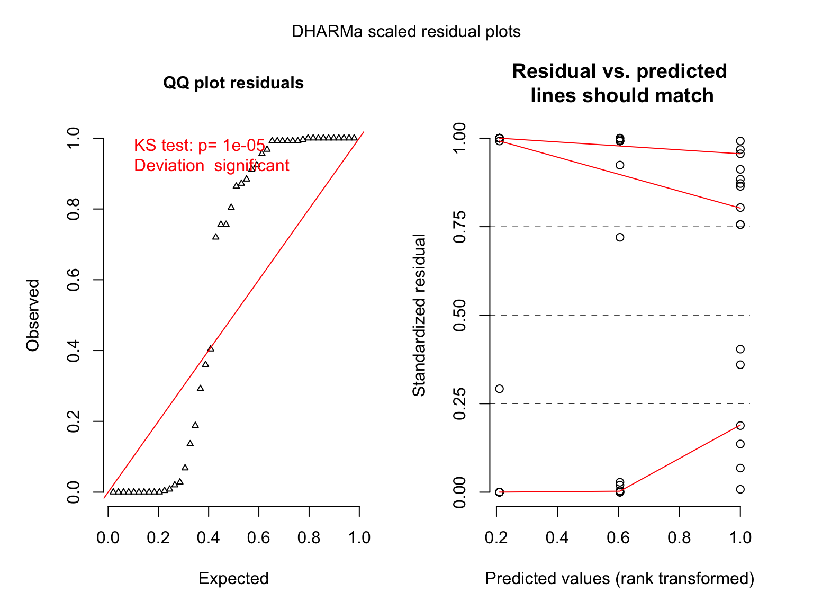
What is Overdispersion
- We expect Binomial, Poisson, and other relationships to have a fixed relationship with their variance.
- For Poisson, variance = mean. For Binomial, the variance is size*p(1-p).
- Overdispersion is when we use these distributions, but fail to meet the above assumption.
Overdispersed Binomial
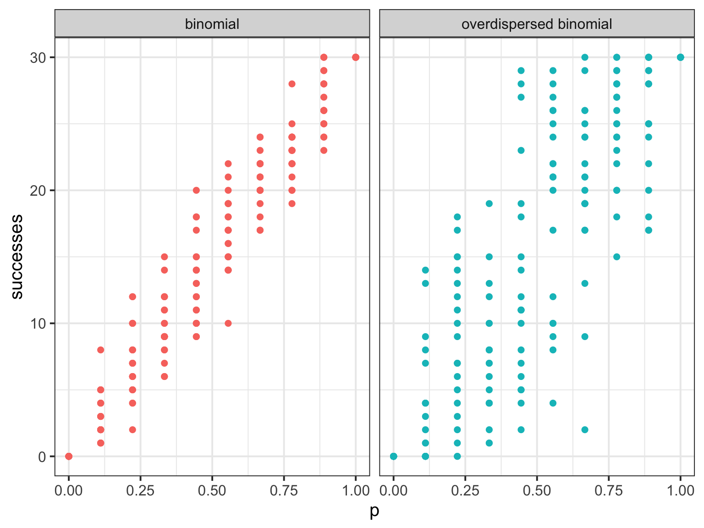
Overdispersed Poisson
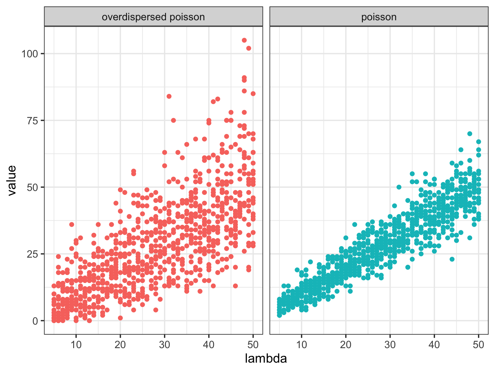
What could over/underdispersion indicate?
- We are missing key predictors
- We are failing to model heterogeneity in predictions due to autocorrelaiton
- Random Effects
- Temporal autocorrelation
- Spatial autocorrelation
- Random Effects
- We are using the wrong error distribution
Mixture-based solutions
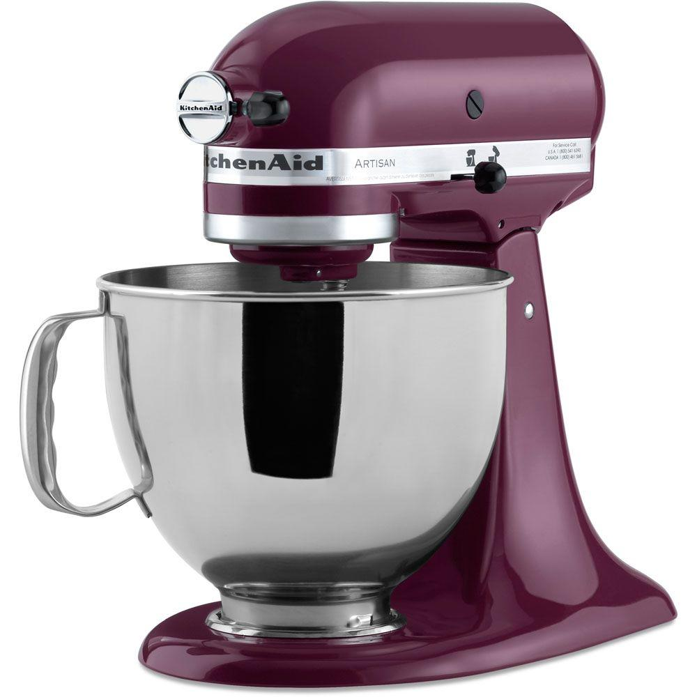
- We can mix distributions in two ways
- First, we can apply a scaling correction - a Quasi-distribution
- OR, we can mix together two distributions into one!
Quasi-distributions and a Scaling Parameter
Binomial pdf: \[P(X=k)={n \choose k}p^{k}(1-p)^{n-k}\]Quasi-binomial pdf: \[P(X=k)={n \choose k}p(p+k\phi)^{k-1}(1-p-k\phi)^{n-k}\]
Some Quasi-Information
- Parameter estimates unaffected (same estimate of mean trend)
- SE might change
- Uses ‘quasi-likelihood’
- We need to use QAIC instead of AIC to account for overdispersion
- Really, we fit a model, then futz with \(\phi\) to accomodate error
QuasiBinomial Reed Frogs
Compare Regular and Quasi-Binomial Coefficient Estimate
rbind(tidy(reedfrog_analysis),
tidy(reeds_qb)) %>%
cbind(tibble(model = c("Ordinary", "Ordinary", "Quasi", "Quasi")), .) %>%
knitr:: kable()| model | term | estimate | std.error | statistic | p.value |
|---|---|---|---|---|---|
| Ordinary | (Intercept) | 1.3486218 | 0.2330848 | 5.7859713 | 0.0000000 |
| Ordinary | density | -0.0179729 | 0.0078762 | -2.2819412 | 0.0224928 |
| Quasi | (Intercept) | 1.3486218 | 0.6928823 | 1.9463937 | 0.0577302 |
| Quasi | density | -0.0179729 | 0.0234132 | -0.7676423 | 0.4466224 |
The overdispersion factor
##
## Call:
## glm(formula = cbind(surv, density - surv) ~ density, family = quasibinomial,
## data = reedfrogs)
##
## Deviance Residuals:
## Min 1Q Median 3Q Max
## -6.893 -2.075 1.117 2.594 5.270
##
## Coefficients:
## Estimate Std. Error t value Pr(>|t|)
## (Intercept) 1.34862 0.69288 1.946 0.0577 .
## density -0.01797 0.02341 -0.768 0.4466
## ---
## Signif. codes: 0 '***' 0.001 '**' 0.01 '*' 0.05 '.' 0.1 ' ' 1
##
## (Dispersion parameter for quasibinomial family taken to be 8.836721)
##
## Null deviance: 448.11 on 47 degrees of freedom
## Residual deviance: 442.75 on 46 degrees of freedom
## AIC: NA
##
## Number of Fisher Scoring iterations: 4Pure Mixture Distributions
\(X \sim Bin(n,p)\)
\(p\sim Beta(\alpha,\beta)\)
or
\(p\sim Beta(\hat{p},\theta)\)
The Beta
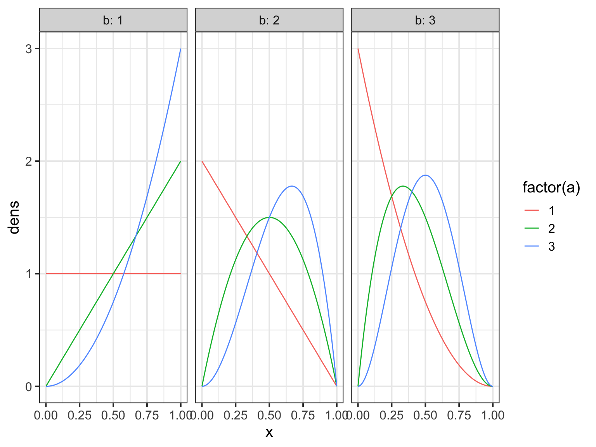
How does the beta binomial change things?
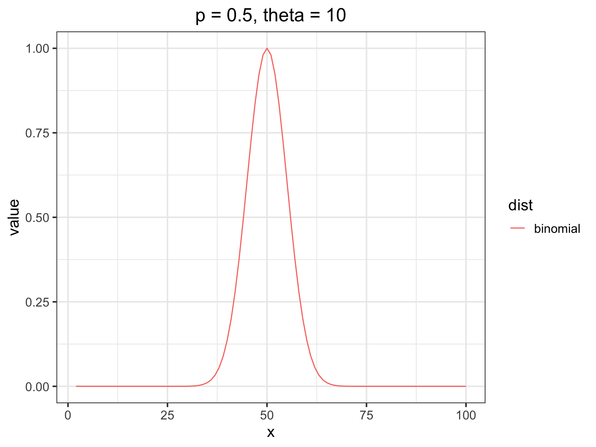
How does the beta binomial change things?
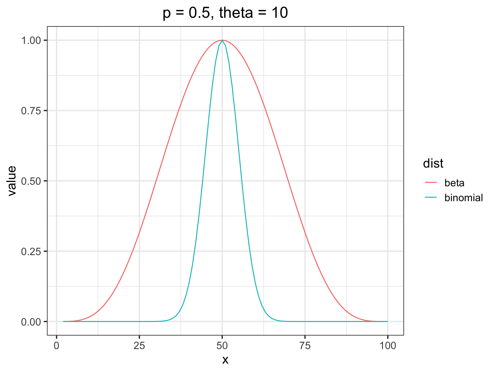
How does the beta binomial change things?
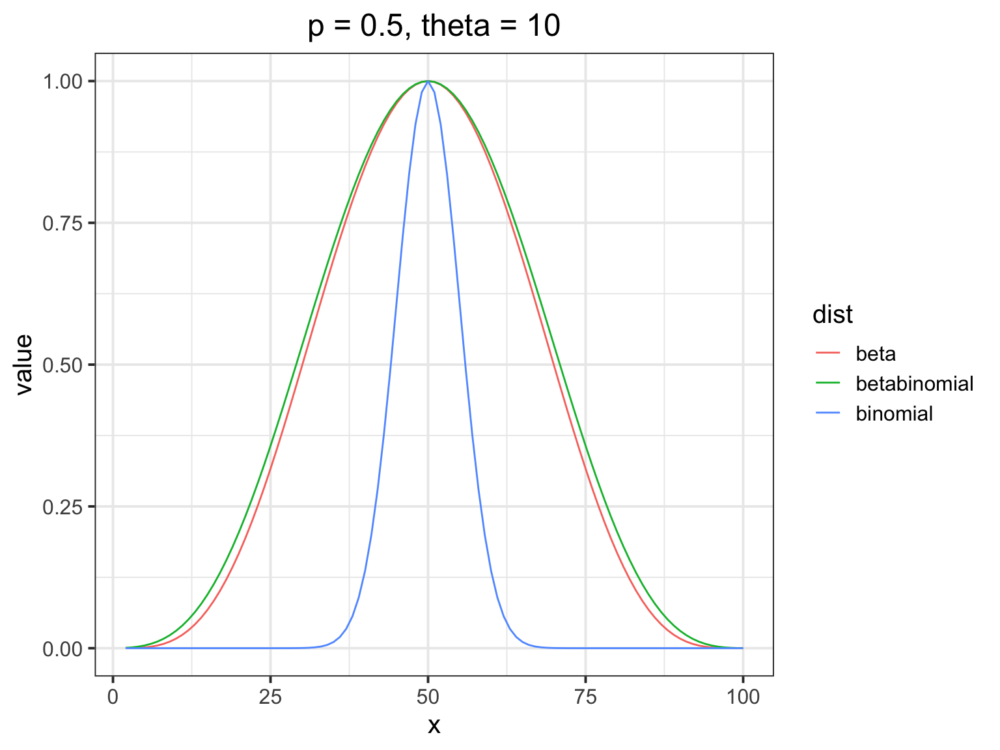
How does the beta binomial change things?
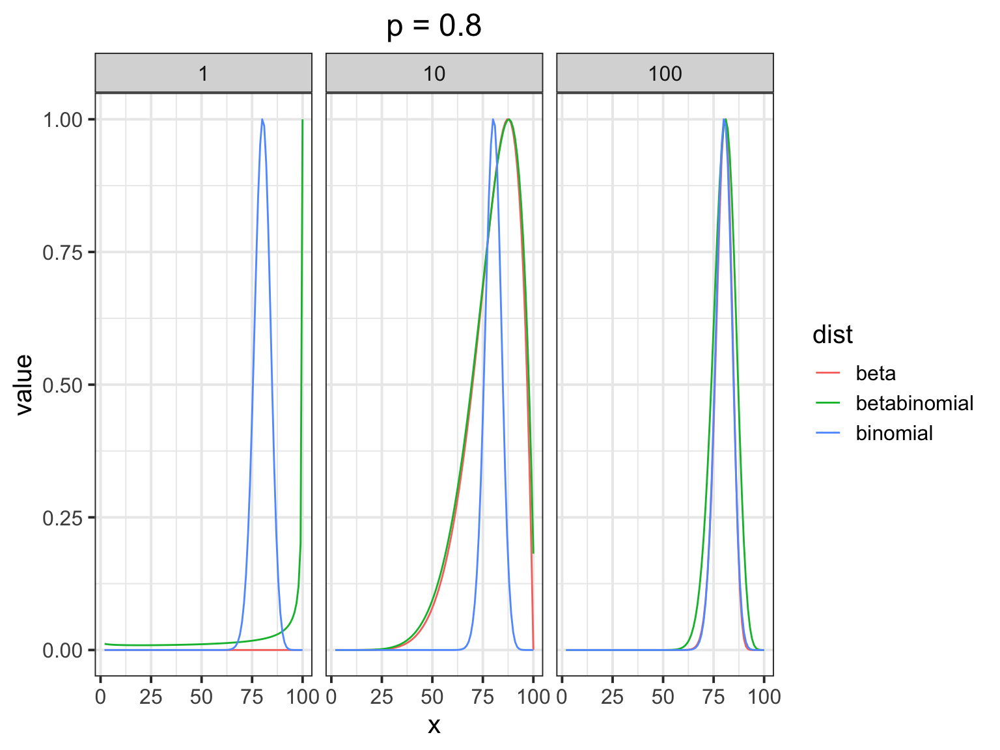
The Beta-Binomial in Action
What is Template Model Builder?
- Uses Automatic Differentation (AD) to fit likelihood models
- First deployed with AD Model Builder
- VERY fast for models like beta-binomials with underlying ‘latent’ variables
- Fits a WIDE variety of model structures (replacing nlme and lme4?)
Latent?
Comparing methods
rbind(tidy(reedfrog_analysis),
tidy(reeds_qb),
tidy(reeds_bb_tmb) %>% select(-effect, -component)) %>%
cbind(tibble(model = c("Ordinary", "Ordinary", "Quasi", "Quasi", "BB", "BB")), .) %>%
knitr:: kable()| model | term | estimate | std.error | statistic | p.value |
|---|---|---|---|---|---|
| Ordinary | (Intercept) | 1.3486218 | 0.2330848 | 5.7859713 | 0.0000000 |
| Ordinary | density | -0.0179729 | 0.0078762 | -2.2819412 | 0.0224928 |
| Quasi | (Intercept) | 1.3486218 | 0.6928823 | 1.9463937 | 0.0577302 |
| Quasi | density | -0.0179729 | 0.0234132 | -0.7676423 | 0.4466224 |
| BB | (Intercept) | 1.2619432 | 0.4348128 | 2.9022677 | 0.0037047 |
| BB | density | -0.0141839 | 0.0163501 | -0.8675107 | 0.3856623 |
Comparing methods
## Family: betabinomial ( logit )
## Formula: cbind(surv, density - surv) ~ density
## Data: reedfrogs
##
## AIC BIC logLik deviance df.resid
## 274.3 279.9 -134.2 268.3 45
##
##
## Overdispersion parameter for betabinomial family (): 2.64
##
## Conditional model:
## Estimate Std. Error z value Pr(>|z|)
## (Intercept) 1.26194 0.43481 2.902 0.0037 **
## density -0.01418 0.01635 -0.868 0.3857
## ---
## Signif. codes: 0 '***' 0.001 '**' 0.01 '*' 0.05 '.' 0.1 ' ' 1A Bayesian Approach
reedfrogs$d <- scale(reedfrogs$density, scale = FALSE)
reed_bb_mod <- alist(
#likelihood
surv ~ dbetabinom(density, prob, theta),
#DGP
logit(prob) <- a + b*d,
a ~ dnorm(0,2),
b ~ dnorm(0,2),
theta ~ dexp(1)
)
reed_bb_fit <- map2stan(reed_bb_mod, data=reedfrogs,
chains = 2, cores = 2, iter=4000,
warmup = 1000)## Warning in map2stan(reed_bb_mod, data = reedfrogs, chains = 2, cores = 2, :
## Stripping scale attributes from variable dAn Exponential Prior?
Or An Cauchy Prior?
Let’s look at an estimate!
#get samples of parameters
samp <- extract.samples(reed_bb_fit)
#Calculate predicted survival probabilities for density = 50
surv <- logistic(samp$a + samp$b*50)
#And the answer is...
quantile(surv)## 0% 25% 50% 75% 100%
## 0.06372596 0.40869280 0.54824934 0.68115522 0.97063846But What about the Overdispersion?
## 0% 25% 50% 75% 100%
## 6.961648e-08 2.593437e-01 5.620024e-01 8.226571e-01 1.000000e+00Let’s see it!
Let’s see it!
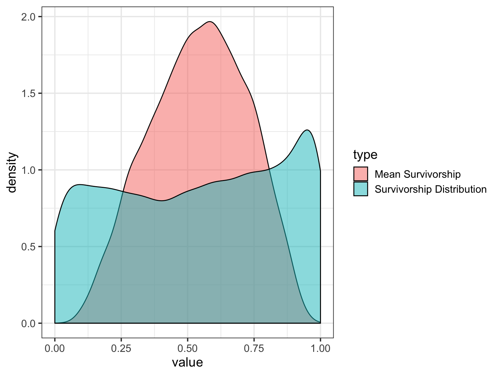
Or, from Samples
#what is the mean distribution of survivorshop
mean_surv <- tibble(x = seq(0, 1, by = 0.001),
mean_surv_dens = dbeta2(x, mean(surv), mean(samp$theta)))
#now, get 100 sample density curves
surv_100 <- crossing(x = seq(0.01,0.99,by = 0.01),
surv = surv[1:100],
theta = samp$theta[1:100]) %>%
mutate(surv_dens = dbeta2(x, surv, theta))Or, from Samples
ggplot()+
geom_line(data = surv_100,
aes(x = x, y = surv_dens, group = paste(theta, surv)), alpha = 0.005) +
geom_line(data = mean_surv,
aes(x = x, y = mean_surv_dens), lwd = 1.3, color = "red") +
ylab("Density") + xlab("Survivorship")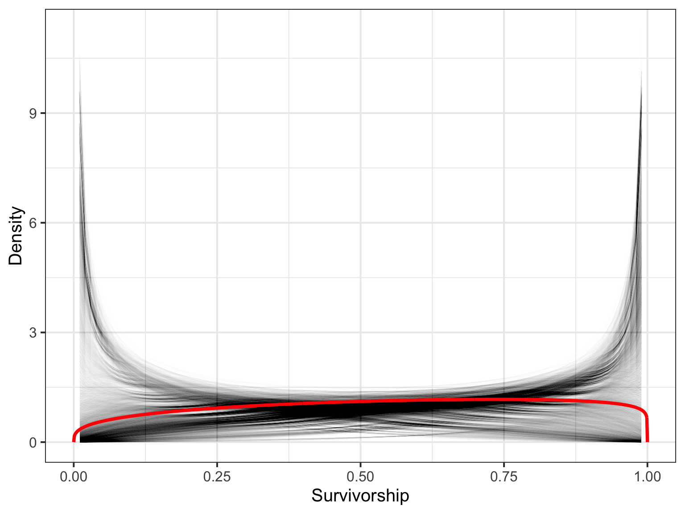
Did this solve our overdispersion problem?
## [ 100 / 1000 ]
[ 200 / 1000 ]
[ 300 / 1000 ]
[ 400 / 1000 ]
[ 500 / 1000 ]
[ 600 / 1000 ]
[ 700 / 1000 ]
[ 800 / 1000 ]
[ 900 / 1000 ]
[ 1000 / 1000 ]
## [ 100 / 1000 ]
[ 200 / 1000 ]
[ 300 / 1000 ]
[ 400 / 1000 ]
[ 500 / 1000 ]
[ 600 / 1000 ]
[ 700 / 1000 ]
[ 800 / 1000 ]
[ 900 / 1000 ]
[ 1000 / 1000 ]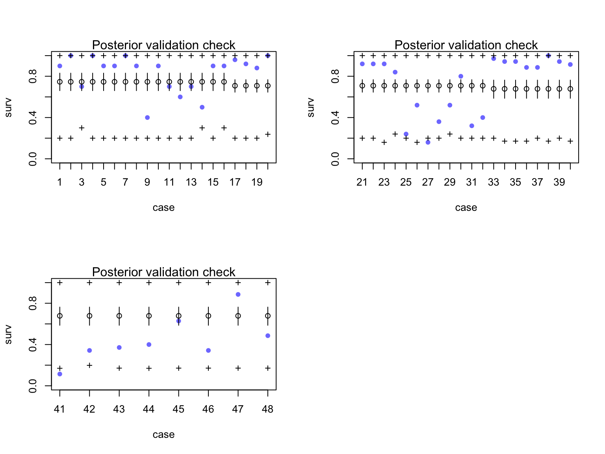
A brief note on IC
- Because of the underlying latent nature of a beta-binomial, use WAIC with care
- DIC more reliable, but stay tuned
Overdispersion and Binomials
- Can easily check by looking at quasibinomial - is the overdispersion parameter large?
- Quasi-likelihood as one fix
- But, problems in what is prediction intervals
- Also, it’s kind of a hack?
- But, problems in what is prediction intervals
- Compound distributions provide easy solution
- Beta-binomial
- Implemented in glmmTMB and rethinking
- With Bayes, can look at variability in posterior due to overdispersion
- Beta-binomial
2.5 Beta-Binomial Exercise
A. Fit the model with B. What does WAIC tell you about betabinomial models with versus without one or more predictor? C. Going back to the binomial model, does including one or more predictor alleviate the overdispersion problem in the orignal model?
Hurricanes and Gamma Poisson
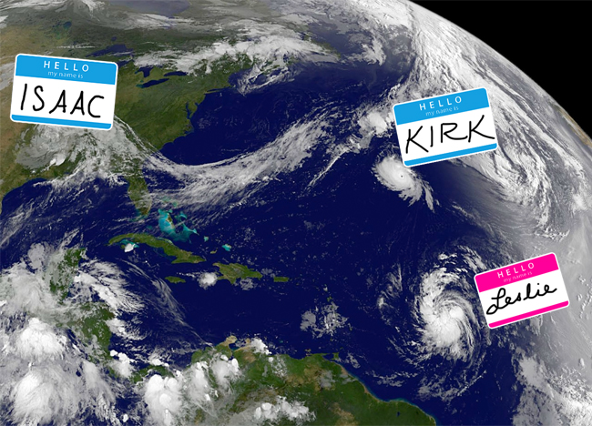Overdispersed hurricanes
## name year deaths category min_pressure damage_norm female femininity
## 1 Easy 1950 2 3 960 1590 1 6.77778
## 2 King 1950 4 3 955 5350 0 1.38889
## 3 Able 1952 3 1 985 150 0 3.83333
## 4 Barbara 1953 1 1 987 58 1 9.83333
## 5 Florence 1953 0 1 985 15 1 8.33333
## 6 Carol 1954 60 3 960 19321 1 8.11111Overdispersed hurricanes
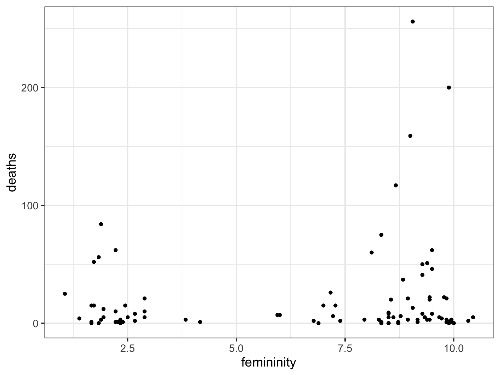
Poisson?
hur_mod <- glm(deaths ~ femininity, family = poisson,
data = Hurricanes)
plot(simulateResiduals(hur_mod))
Options for Overdispersed Poisson
- Quasi-poisson
- \(var(Y) = \theta \mu\)
- Post-hoc fitting of dispersion parameter
- \(var(Y) = \theta \mu\)
- Gamma-poisson mixture
- \(Y \sim Pois(\lambda)\)
- $Gamma(, )
- Equivalent to a Negative Binomial
- Variance increases with square of mean
- \(Y \sim Pois(\lambda)\)
The Gamma Poisson
- One of the most useful distributions you will run into is the Gamma Poison.
- It’s just another name for the negative binomial.
Distribution for count data whose variance increases faster than its mean
The \(\lambda\) parameter of your standard Poisson is Gamma distribted.
The Distribution (mean of 40)
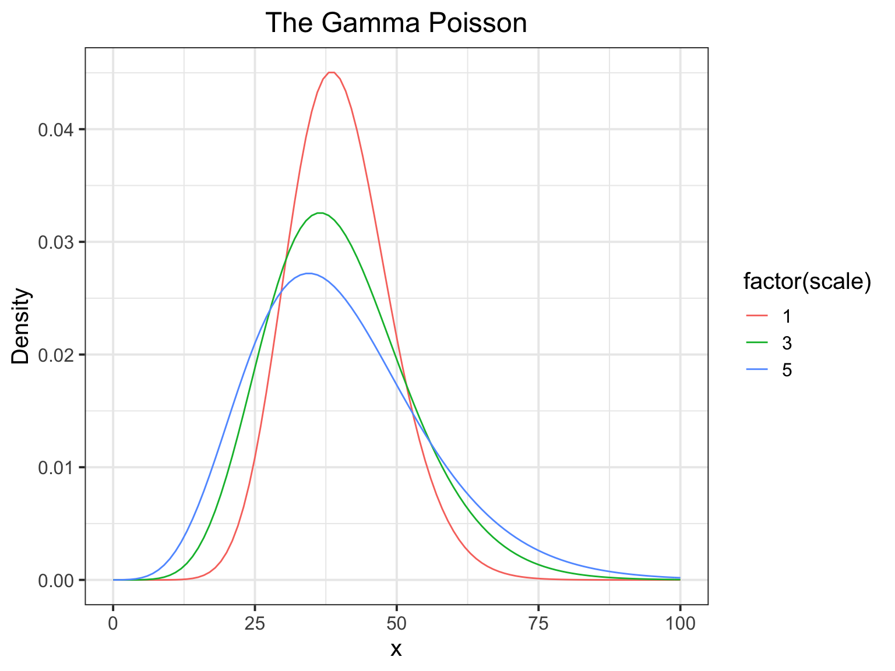
Two approaches to hurricanes
Another look at overdispersion
##
## Call:
## glm(formula = deaths ~ femininity, family = quasipoisson, data = Hurricanes)
##
## Deviance Residuals:
## Min 1Q Median 3Q Max
## -7.1429 -5.3716 -3.8288 -0.5364 27.4230
##
## Coefficients:
## Estimate Std. Error t value Pr(>|t|)
## (Intercept) 2.50037 0.54371 4.599 1.38e-05 ***
## femininity 0.07387 0.06778 1.090 0.279
## ---
## Signif. codes: 0 '***' 0.001 '**' 0.01 '*' 0.05 '.' 0.1 ' ' 1
##
## (Dispersion parameter for quasipoisson family taken to be 73.78494)
##
## Null deviance: 4031.9 on 91 degrees of freedom
## Residual deviance: 3937.5 on 90 degrees of freedom
## AIC: NA
##
## Number of Fisher Scoring iterations: 6How did the Gamma Poisson (NB) Compare?
##
## Call:
## glm.nb(formula = deaths ~ femininity, data = Hurricanes, init.theta = 0.454664691,
## link = log)
##
## Deviance Residuals:
## Min 1Q Median 3Q Max
## -1.91503 -1.13091 -0.70723 -0.06953 2.59040
##
## Coefficients:
## Estimate Std. Error z value Pr(>|z|)
## (Intercept) 2.53050 0.36685 6.898 5.28e-12 ***
## femininity 0.06965 0.04882 1.427 0.154
## ---
## Signif. codes: 0 '***' 0.001 '**' 0.01 '*' 0.05 '.' 0.1 ' ' 1
##
## (Dispersion parameter for Negative Binomial(0.4547) family taken to be 1)
##
## Null deviance: 111.15 on 91 degrees of freedom
## Residual deviance: 109.10 on 90 degrees of freedom
## AIC: 708.63
##
## Number of Fisher Scoring iterations: 1
##
##
## Theta: 0.4547
## Std. Err.: 0.0625
##
## 2 x log-likelihood: -702.6260Let’s look at the residuals
 ## A Fully Bayesian Gamma Poisson
## A Fully Bayesian Gamma Poisson
Hurricanes$f <- scale(Hurricanes$femininity)
huric_mod_gp <- alist(
#likelihood
deaths ~ dgampois(lambda, scale),
#Data generating process
log(lambda) <- a + b*f,
#priors
a ~ dnorm(0,10),
b ~ dnorm(0,10),
scale ~ dexp(2)
)
huric_fit_gp <- map(huric_mod_gp, data=Hurricanes)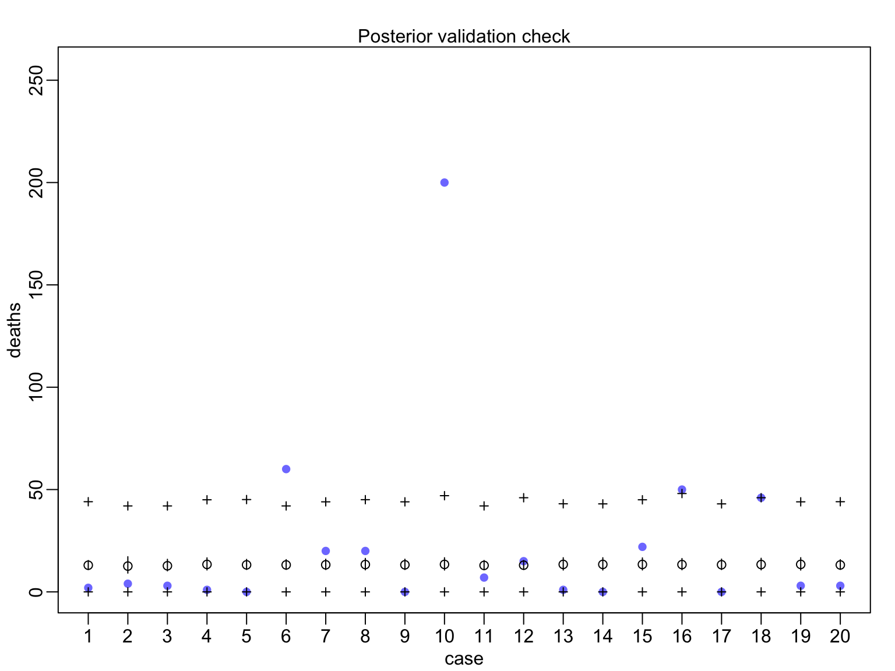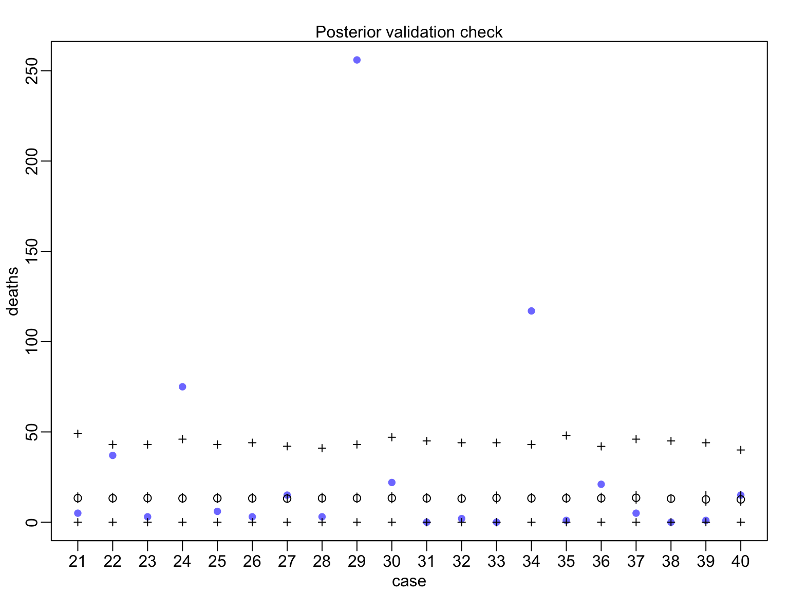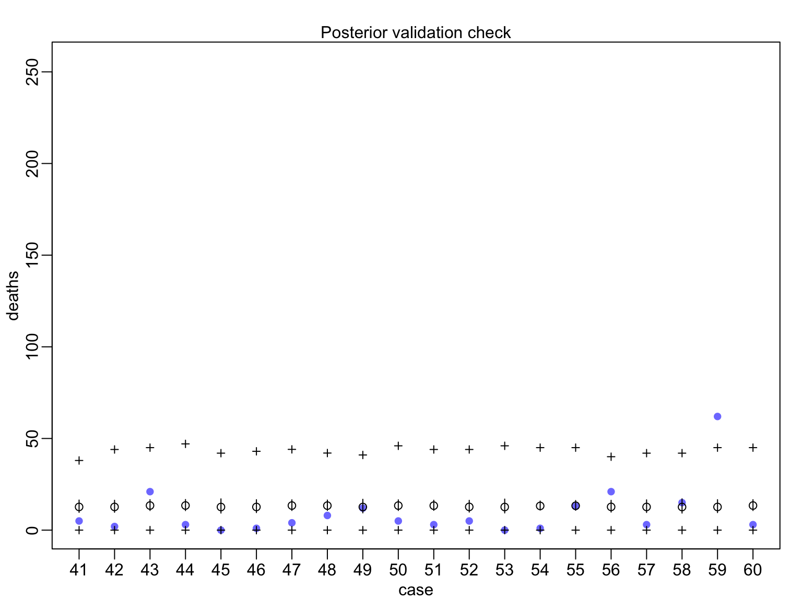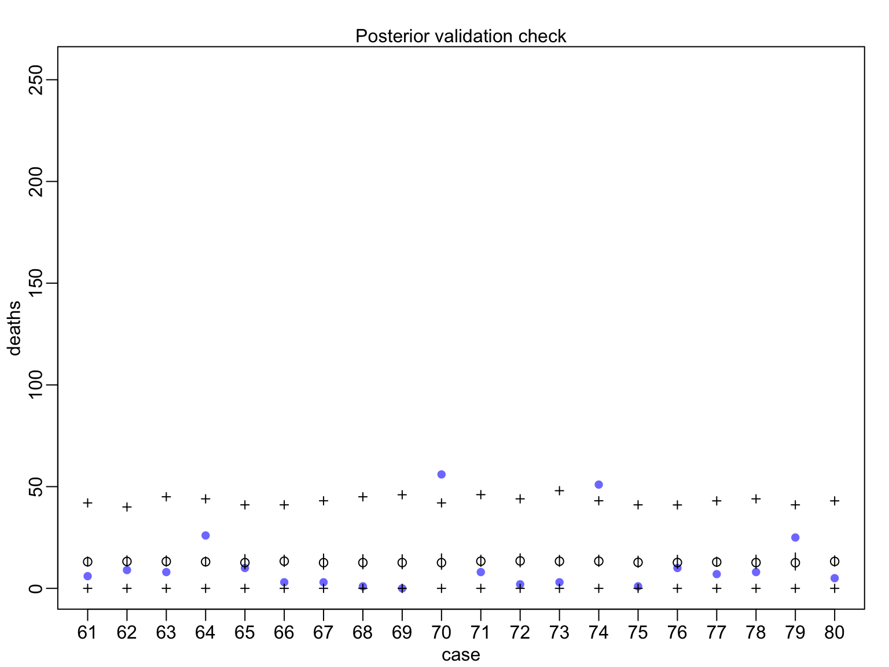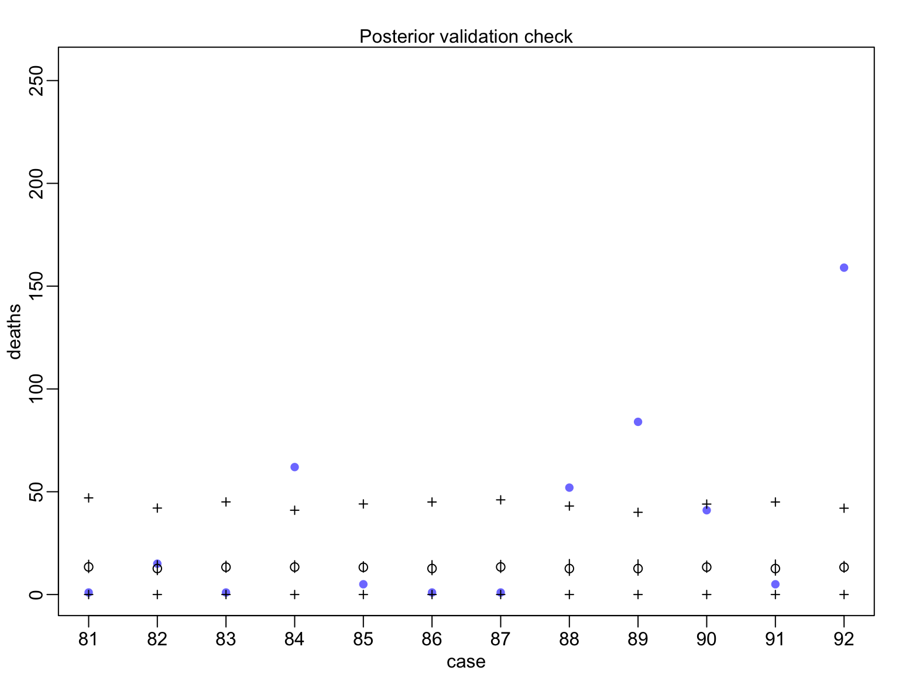
Evaluating Posterior Predictions
huric_coefs_gp <- extract.samples(huric_fit_gp, n=50)
h_coef_dens <- crossing(femininity = c(1, 11),
f = (femininity -
mean(Hurricanes$femininity))/sd(Hurricanes$femininity),
x=0:20, data.frame(huric_coefs_gp)) %>%
mutate(dens = dgampois(x, exp(a + b*femininity), scale))
ggplot(h_coef_dens, aes(x=x, y=dens, color=factor(femininity), group=factor(paste(scale, femininity, a, b)))) +
geom_line(alpha=0.2) +
facet_wrap(~femininity, labeller="label_both") +
scale_color_manual(values=c("red", "blue"), guide="none")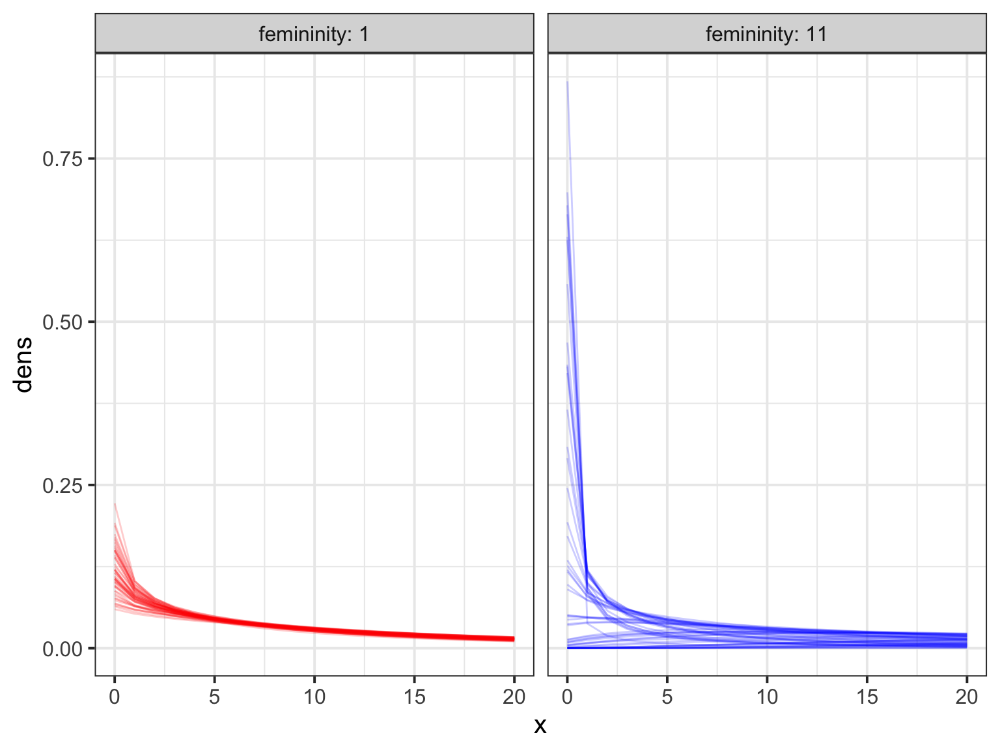
newdat <- data.frame(femininity = seq(1,11,length.out=100)) %>%
mutate(f = (femininity - mean(Hurricanes$femininity))/sd(Hurricanes$femininity))
hur_fitted <- link(huric_fit_gp, data = newdat)## [ 100 / 1000 ]
[ 200 / 1000 ]
[ 300 / 1000 ]
[ 400 / 1000 ]
[ 500 / 1000 ]
[ 600 / 1000 ]
[ 700 / 1000 ]
[ 800 / 1000 ]
[ 900 / 1000 ]
[ 1000 / 1000 ]## [ 100 / 1000 ]
[ 200 / 1000 ]
[ 300 / 1000 ]
[ 400 / 1000 ]
[ 500 / 1000 ]
[ 600 / 1000 ]
[ 700 / 1000 ]
[ 800 / 1000 ]
[ 900 / 1000 ]
[ 1000 / 1000 ]hur <- tibble(femininity = seq(1,11,length.out=100),
deaths = apply(hur_fitted, 2, mean),
fit_lwr = apply(hur_fitted, 2, HPDI)[1,],
fit_upr = apply(hur_fitted, 2, HPDI)[2,],
pred_lwr = apply(hur_predicted, 2, HPDI)[1,],
pred_upr = apply(hur_predicted, 2, HPDI)[2,])
ggplot(hur,
aes(x = femininity, y = deaths)) +
geom_ribbon(aes(ymin = pred_lwr, ymax = pred_upr), alpha = 0.1) +
geom_ribbon(aes(ymin = fit_lwr, ymax = fit_upr), fill = "lightblue") +
geom_line(lwd = 1.4) +
geom_point(data = Hurricanes)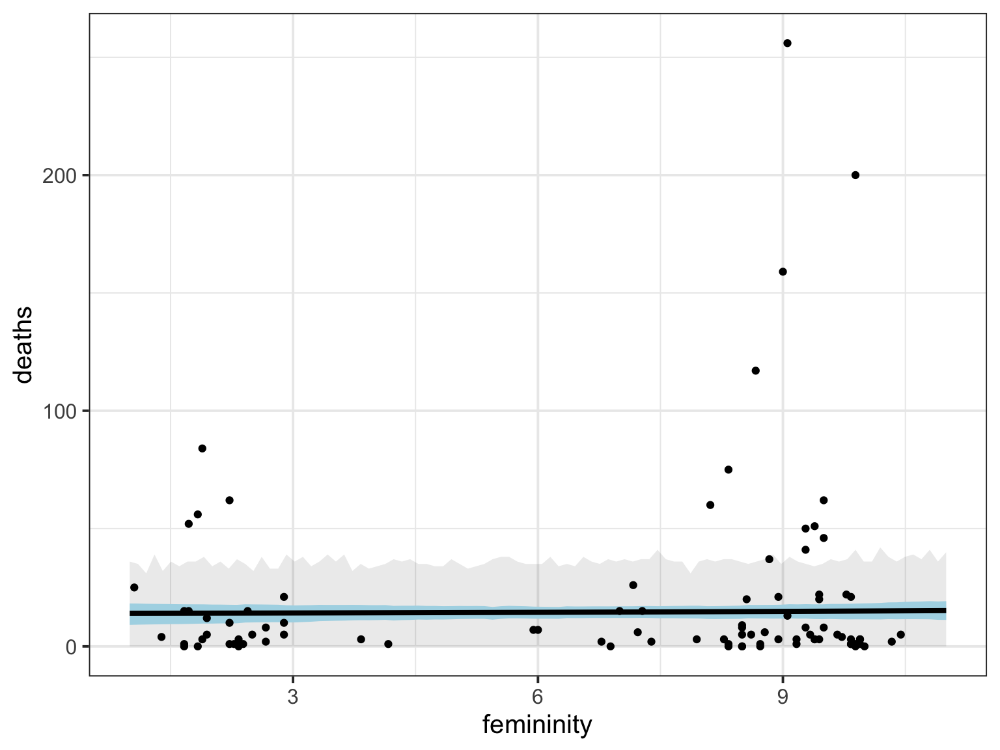
3.4 Exercises
A. Plot model predictions! What does this show? B. What does WAIC tell you about models with additional predictors? What about an offset for damage? C. Going back to the poisson model, does including one or more predictor alleviate the overdispersion problem in the orignal model? Particularly the offset of initial damage?